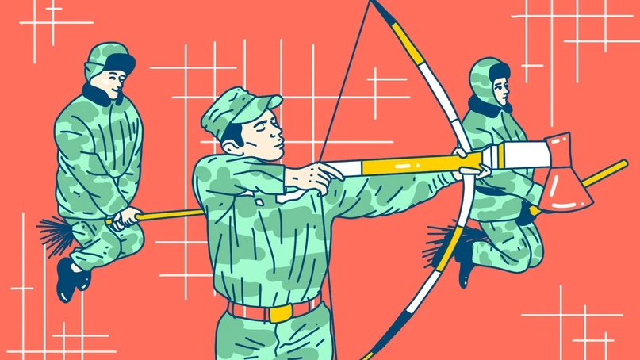
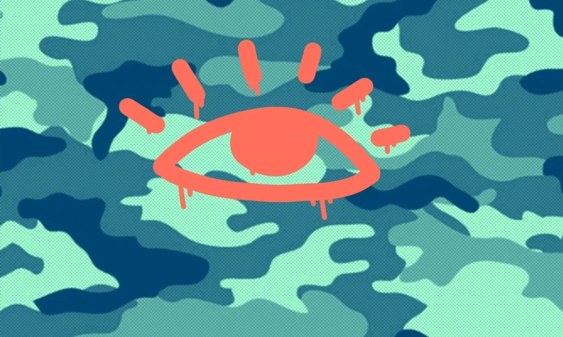

Журнал Министерства обороны опубликовал текст, в котором нам рассказывают о парапсихологическом спецназе, способном посредством “метаконтакта” читать мысли врагов, управлять дельфинами и даже ломать электронику противника. Данила Блюз вспомнил годы службы в армии и пришел к выводу, что и сам видел несколько суперсолдат со сверхспособностями.

Я всегда знал, что наша армия всех сильнее и служат в ней если не сверхчеловеки, то люди как минимум недюжинные. Вспомните хотя бы 90-е, когда военным платили копейки и даже эти копейки выплачивали нерегулярно. Офицеры ютились со своими семьями в разваливающихся бараках полумертвых военных городков, перебивались с хлеба на воду и все равно продолжали служить, верные присяге.
Если эти люди на гражданке способны терпеть такие лишения, то война для них — сущий пустяк, как экскурсионная прогулка на курорте, только с автоматом. Ну и как забыть героев Великой Отечественной, чьи подвиги сравнимы с подвигами античных полубогов. Матросов, Гастелло, Маресьев, Космодемьянская, Портнова, храбрый летчик Талалихин, 28 панфиловцев и вся Молодая гвардия. До сих пор историки спорят, правда это или вымысел советской мифологии.
Казалось бы, куда уж круче быть русскому солдату! Оказывается, есть куда. Официальный печатный орган Министерства обороны, журнал “Армейский сборник” выпустил в февральском номере статью за авторством Николая Пороскова под названием “Суперсолдат для войн будущего”. В тексте автор приоткрывает завесу секретности (да что там, просто распахивает ее перед нами: “Нате! Смотрите!”) над разработками Минобороны и заявляет, что в нашей армии давно уже действует “парапсихологический спецназ”. Во времена чеченской кампании, используя так называемый метаконтакт, наши военные могли получать достоверную информацию от пленных.
“Владеющий технологией метаконтакта может вести, например, невербальный допрос. Он «насквозь» видит взятого в плен солдата противника: что это за человек, какие у него слабые и сильные стороны, пойдет ли на вербовку. Достоверность допроса практически стопроцентная”, — пишет Поросков.
Сперва военные тренировались отдавать мыслеприказы дельфинам, как это делал дрессировщик Дуров, а потом наловчились контактировать и с людьми. Одна из способностей — выявлять потенциальных участников террористических группировок. То есть еще до вступления в оную, еще даже до того, как вы задумаетесь присягнуть на верность ИГИЛу (организации, запрещенной в РФ) психоспецназовец уже знает, что вы будущий террорист! Ловко, да?
Но не только телепатией владеют наши бойцы. Нет, они, используя свои таланты, могут прочитать закрытый в сейфе документ, причем на иностранном языке, которым сам телепат не владеет. Могут силой мысли останавливать кровотечение, могут сутками не спать, могут питаться одной травой и водой. Кстати, о силе мысли — она настолько велика, что способна воздействовать даже на технику: сжигать кристаллы в генераторах, ломать программы в компьютерах, подслушивать разговоры, перехватывать и внедряться в радио- и телеэфиры.
Удивительно, что с такими-то суперсолдатами чеченская кампания закончилась… так как она закончилась. Предположу, что всему виной — отсутствие в Чечне пространства для маневра армии дельфинов. Вдобавок чеченцы не имели привычки писать секретных документов, а уж тем более хранить их в сейфах. Также они не особо-то зависели от компьютеров, генераторов и телеэфиров. Ну а воду с травой у нас и безо всяких сверхспособностей полстраны тогда жрало, так что это совершенно обыденный навык.

Но все равно я горд за свою страну, раз она занялась парапсихологическим усовершенствованием солдат. Думаю, я служа в армии, тоже стал невольным свидетелем последствий подобных секретных психоэкспериментов. Так, старшина у меня в роте матерился совершенно необычными словами, которые вводили людей в ступор. Вот несколько примеров из его лексикона, который совершенствовался и пополнялся каждый день: “лепиздрюк, хуеротый, жопоухий, всратопездый, пиздляк, гондоёб, хуебела, обосранец, пиздюхать (“идти” прим. перев.), сраконюх, сракоёбина, пиздопляс”. Ну и незабвенное: то, что я навечно сохранил в своем матерном тезаурусе: “ёбанный бОбан!”. Возможно, такие мантры кажутся невинными на гражданке, но произнесенные в бою, громким командным голосом, слова эти уж точно воодушевили бы солдат, а противника обратили бы в позорное бегство.
Другой прапор работал на складе ГСМ. В своем тексте о суперсолдатах Поросков упоминает об одной военной разработке — бактериях, которые, попадая в горючее, уничтожают его. Так вот, думаю, начальник склада ГСМ у меня в части имел отношение к данной разработке, потому что горючее у него пропадало регулярно. Думаю, он с легкостью опустошил бы топливные запасы врагов.
Ну а командир роты у нас был просто феномен — он безошибочно определял, где в этот момент в части бухают. Он мог спокойно сидеть в кабинете, заполнять бумаги или орать на дневального, как вдруг нос его задирался вверх, увлекая за собой остальную голову, и начинал короткими порциями вдыхать воздух вокруг. Тут же ротный нахлобучивал на голову фуражку и бежал зигзагами куда-то, ведомый своим волшебным нюхом. Возвращался в казарму он после отбоя, без фуражки, с носом, опущенным на грудь. Все просто диву давались на его чутье. Даже предположить боюсь, в каких стратегических целях это можно было использовать.
Вот только многие читатели начали подозревать, как бы не вышла статья товарища Пороскова боком нашей державе. Ведь выходит, что теперь противник будет знать о наших секретных разработках. Враги начнут отстреливать дельфинов в заливах, потому что каждый дельфин — потенциальный русский шпион, начнут шапочки из фольги носить, чтобы наши психоспецназовцы не могли их коварные мысли считывать.
Но лично я полагаю, что так оно и надо: посеять панику в стане врага. Пусть трепещат, поганцы, пусть чего лишнего подумать боятся! В любом случае наверняка Министерство обороны не просто так опубликовало эту статью, там ведь не дураки сидят. Так что мы можем спать спокойно — парапсихологическая граница на замке.